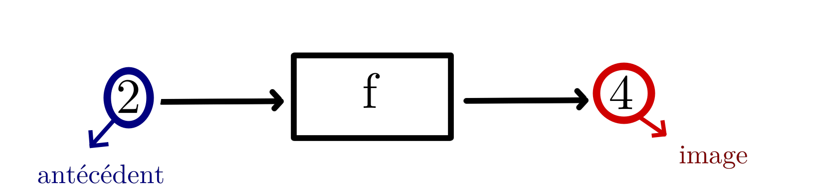

Si vous avez lu la leçon précédente ou compris le fonctionnement de base d'une fonction
vous savez donc qu'il y a un nombre qui entre dans la fonction, la fonction transforme
ce nombre selon certaines opérations et en ressort un nouveau nombre.
Les mathématiciens travaillent parfois tous les jours sur des fonctions et écrire
"nombre qui entre", "nombre qui sort" est un peu long. On préfère donc appeler "nombre
qui entre" : antécédent. Et "nombre qui sort" : image.

Ci-dessus vous avez le schéma type "machine à nombre" présentée dans la leçon précédente. Mais en
écriture mathématique ça donne:
L'origine du mot antécédent et du mot image...
Pourquoi appelle-t-on la valeur d'entrée "l'antécédent"? Antécédent est un mot latin.
il est composé du préfixe "ante-" qui signifie "avant" et du verbe "cedere" qui signifie
"venir". Antécédent signifie donc mot pour mot: "ce qui vient avant". Or le nombre qui entre
dans la fonction est bien le nombre qui vient avant, n'est-ce pas? D'où son nom: antécédent.
Malheureusement je n'ai pas de réponse aussi précise à vous proposer pour le terme "image"
(la valeur qui sort). J'ai toutefois mon hypothèse (attention: cette hypothèse est très probablement
fausse. N'allez donc pas apprendre ça comme une vérité)...
Selon moi il est probable que ce terme vienne de la géométrie. En effet, souvenez-vous de ces énoncés:
"Quel est l'image du point A par la symétrie axiale d'axe (d) ? Quel est l'image du point B par la symétrie centrale
de centre O ?" Ici le point A est une valeur (qui n'est pas un nombre certes) qu'on rentre dans une sorte de machine
géométrique (la symétrie axiale ou centrale) et qui en ressort transformé. On appelle le résultat de cette transformation
l'image.
Il serait donc possible que les fonctions aient tout simplement copié ce terme pour signifier "ce qui a été transformé"
ou encore "ce qui ressort après la transformation".
Conclusion
Bravo à vous si vous êtes arrivés au bout de cette leçon! Vous avez fait un pas de plus vers la capacité à résoudre des problèmes
qui ne font certes pas parti de votre quotidien ordinaire mais qui vous permettront de résoudre des problèmes extraordinaires!
Maintenant que vous êtes de fins connaisseurs des fonctions, prochaine étape: le repère cartésien.
Et on commence avec la découverte des axes des abscisses et des ordonnées.